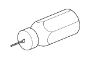
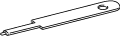
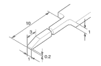
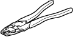
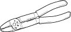
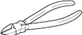
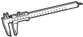
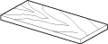

| PREPARATORY ITEMS |
| Illustration | Part number | Part name | Notes and purpose |
|  | 09991-00500 09991-00510 |
SST | To remove the 0.64 connector terminal |
|  | 09992-01030 | SST | To remove the 0.64 II connector terminal |
|  | - | Special tool | To remove the terminal Refer to the following illustration |
|  | 09042-2C100 | SST(Crimping tool) | To crimp sleeves (For aluminum wire repair) |
|  | - | Crimping tool | To crimp sleeves (For copper wire repair) |
|  | - | Wire cutters | To cut wires |
|  | - | Caliper | To measure the diameter of a wire and wire strand |
| - | - | Dryer or heat gun | To heat heat shrink sleeves (For aluminum wire repair) (1000W or more, and the thermal fuse with 190°C or more) |
|  | - | Wood plate | To shield heat (For aluminum wire repair) Size reference (mm): 300 x 100 x 10 |